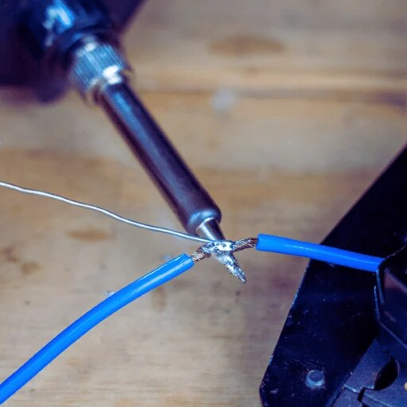
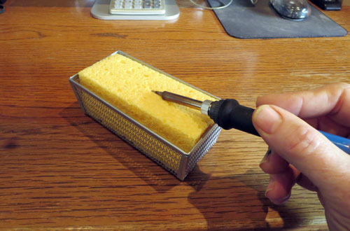
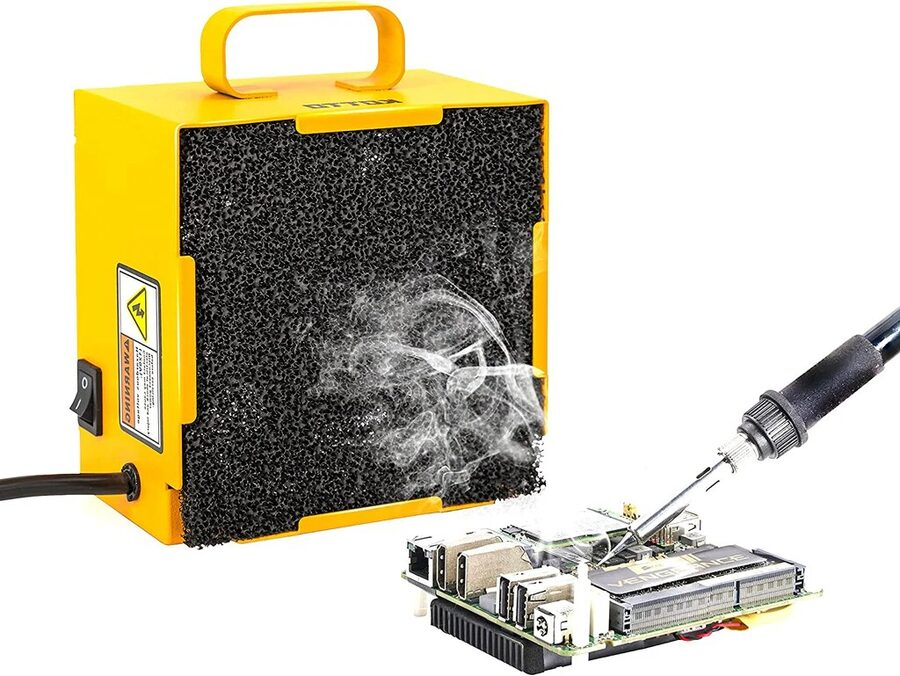
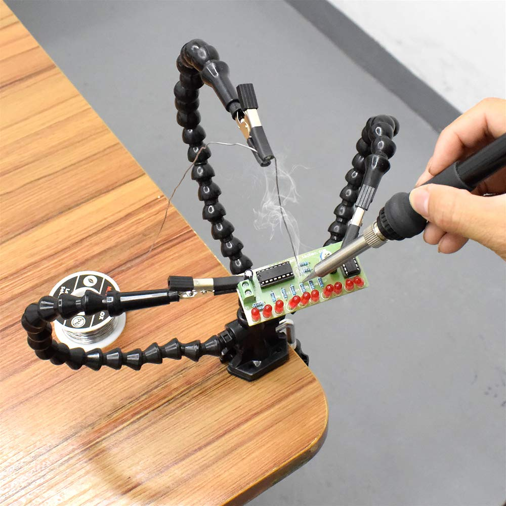
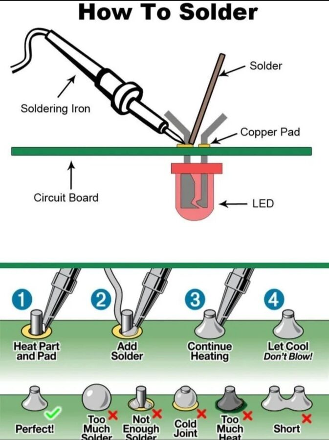

Soldering is the fundamental skill that turns loose wires and components into a circuit that stays together forever. This lesson covers why we solder, how to do it correctly, the tools involved, and the situations where a soldering alternative is a smarter choice.
Electronics need reliable electrical connections. Touching two wires together is not enough — movement, vibration, or corrosion will break the contact over time. Soldering permanently bonds conductors using a metal alloy that melts at a low temperature, flows into the joint, and hardens into a mechanically and electrically solid connection.
Permanent bond
Solder creates a metallic bond that resists vibration and mechanical stress far better than tape or twist connections.
Low electrical resistance
A good solder joint conducts electricity almost as well as the wire itself, minimizing voltage drop and heat at the connection.
Industry standard
Every PCB in every phone, computer, and appliance uses soldered joints. Learning to solder is learning how modern electronics are actually made.
Repairability
Unlike glued or crimped joints, soldered connections can be re-melted and reworked with the same iron, making repairs possible.
What Is Solder?
Solder is a low-melting-point metal alloy that acts as the glue between two conductors. It melts when heated, wets the metal surfaces, and solidifies into a joint when cooled. Most solder used in electronics today is a tin-silver-copper alloy (lead-free) or the older tin-lead alloy.
Type
Composition
Melting Point
Notes
Tin-Lead (60/40)
60% tin, 40% lead
~183 °C (361 °F)
Easier to work with; restricted in commercial products in many countries due to toxicity
Lead-Free (SAC305)
96.5% tin, 3% silver, 0.5% copper
~217 °C (423 °F)
Industry and classroom standard today; requires a slightly hotter iron
Rosin-Core
Any alloy with embedded flux
Varies by alloy
Flux is built in to clean and improve wetting — the most common type for beginners
What Is Flux?
Flux is a chemical cleaning agent inside the solder wire. It removes oxide from metal surfaces so the molten solder can bond properly. Without flux, solder beads up rather than flowing smoothly. The smoke you see when soldering is burning flux — not solder itself.
Soldering Tools
A complete soldering setup has more than just an iron. Knowing what each tool does helps students work safely and get better joints.
Essential
Soldering Iron
Heats the joint — not the solder directly
Temperature-controlled irons are best (300–370 °C for lead-free)
Pencil-style irons are standard for through-hole work
Tips come in different shapes: conical, chisel, bevel
Essential
Solder Wire

0.6 mm–0.8 mm diameter is ideal for most school projects
Rosin-core (flux-core) is easiest for beginners
Lead-free SAC305 is the modern classroom standard
Feed solder to the joint, not to the tip
Essential
Tip Cleaner

Brass wire ball — preferred over wet sponge; doesn't cool the tip
Wet cellulose sponge — also works, damp not dripping
Clean the tip before and after every joint
A shiny, silvery tip transfers heat well; a black crusty tip does not
Safety
Fume Extractor

Pulls flux smoke away from the face
Position the intake 2–5 cm from the work
Do not rely on an open window alone in an enclosed room
Always solder in a ventilated area
Helpful
Third Hand / PCB Holder

Holds the board still while both hands are occupied
Clips, helping hands, or vises all work
Prevents burns from touching a moving board
Rework
Desoldering Tools
Solder wick (braid) — absorbs molten solder by capillary action
Solder sucker (pump) — vacuum pulls solder up after melting
Hot air station — reworks surface-mount components
How to Solder: Step by Step
Good soldering technique is about heat transfer, not just melting metal. Follow these steps every time for a reliable joint.
Safety First
A soldering iron tip runs at 300–400 °C — hot enough to cause a serious burn instantly and to ignite paper or fabric. Never set an iron down without returning it to its stand. Wear safety glasses. Keep hair and loose clothing back. Always assume the iron is hot.

Heat the pad and component lead together, feed solder into the heated joint, then let it cool without moving.
Tin the iron tip by melting a small amount of fresh solder onto it until it is shiny silver. Wipe on the brass cleaner. A tinned tip transfers heat quickly and evenly.
Insert the component lead through the PCB hole. Bend it slightly on the underside so it stays in place when you let go.
Touch the tip simultaneously to the component lead and the copper pad for 2–3 seconds to heat both surfaces evenly.
Feed rosin-core solder to the joint — not to the iron — until solder flows around the pad and up the lead. Use just enough to fill the joint.
Remove the solder wire first, then the iron. Hold the component still for 5–10 seconds while the joint solidifies. Do not blow on it.
Inspect: a good joint is shiny (with lead-free solder, slightly matte is normal), volcano-shaped, and surrounds the pad fully. A dull, grainy, or blobby joint is a cold solder joint — re-heat it.
Trim the excess lead with flush-cut wire clippers. Clip close to the solder, but not through the joint itself.
Cold Solder Joints
If the iron or pad is not hot enough, solder will not bond — it just sits on top. A cold joint looks lumpy or dull grey and has high resistance. Always reheat cold joints rather than adding more solder on top.
Reading a Solder Joint
Learning to judge a joint by appearance is one of the most valuable skills in electronics. A joint tells you whether it will last or fail.
Appearance
What It Means
Action
Shiny, volcano-shaped, wets pad and lead
Good joint — solid electrical and mechanical bond
Trim the lead and move on
Dull, grainy, or lumpy
Cold solder joint — pad or lead was not hot enough
Reheat for 2–3 s and let it flow; do not add more solder
Ball sitting on top, not wetting pad
Solder did not bond — surfaces may be dirty or iron too cool
Clean pad with flux, reheat, and re-solder
Bridging between two pads
Solder bridge — short circuit between two connections
Use solder wick or a pump to remove the bridge, then re-solder
Too little solder — pin visible inside hole
Insufficient solder — joint may be mechanically weak
Reheat and add a small amount of fresh solder
Alternatives to Soldering
Soldering is not always the right choice — especially when you are prototyping, learning, or need to be able to change the circuit later. These alternatives are widely used and valid engineering decisions.
Breadboard
Push-fit prototyping boards that need no tools at all. Components and jumper wires plug in and out instantly. Ideal for testing circuit ideas before committing to a PCB. Not suitable for permanent or portable projects — connections loosen under vibration.
Screw Terminals
A clamping block that grips a stripped wire end when a screw is tightened. Common in power wiring and speaker connections. Completely re-usable and requires only a screwdriver. Not practical for miniature or surface-mount electronics.
Wire Connectors (Dupont / JST)
Crimp-on plastic connectors that click together. Used on hobbyist boards like Arduino to keep connections tidy and detachable. Crimping requires a specific tool but the result is clean, reliable, and swap-able.
Conductive Adhesive / Epoxy
Silver-loaded glue that conducts electricity when cured. Used on flexible PCBs and repairs where heat would damage the substrate. Slower and weaker than solder, but useful when soldering is impossible.
Wire Nuts / Wago Clamps
Household wiring connections that twist or clamp wires together inside a plastic housing. Too large for PCB work but appropriate for mains-voltage or power supply wiring where soldering is restricted by code.
Conductive Thread
Metal-coated thread used in e-textiles and wearables where flexible, washable connections are needed. Can be stitched through fabric and tied rather than soldered. Resistance is much higher than wire.
Situation
Best Choice
Reason
Prototyping / testing a circuit idea
Breadboard
Fast, reversible, no heat required
Final, permanent PCB build
Soldering
Lowest resistance, most reliable bond
Connecting modules with headers
Dupont jumper wires
Easy to swap and rearrange without rework
Power wiring inside an enclosure
Screw terminals or Wago clamps
Code-compliant, no torch or iron needed
Wearable / e-textile project
Conductive thread or snap connectors
Survives flexing and washing; no hard solder points on fabric
Common Beginner Mistakes
Heating the solder, not the joint
Solder should melt when it touches the hot pad and lead — not when it touches the iron tip. Touching solder to the tip produces a cold joint.
Moving the joint before it cools
Solder solidifies in 5–10 seconds. Bumping the joint while it is still liquid creates a grainy cold solder joint with higher resistance.
Using too much solder
Excess solder can bridge adjacent pads and cause short circuits. A thin, smooth layer that covers the pad is enough.
A dirty or un-tinned tip
A black oxidized tip transfers heat poorly and produces bad joints. Tin the tip at the start and clean it before every joint.
Skipping ventilation
Flux fumes irritate the respiratory system. Always use a fume extractor or work near open ventilation. Never solder in a sealed room.
Wrong iron temperature
Too cool and the solder won't flow; too hot and you lift pads off the PCB or burn component leads. 320–350 °C is a good starting range for lead-free solder.
Quick Check
1. Where should you apply solder during a through-hole joint?
2. What does a cold solder joint look like, and what causes it?
3. Which connection method is best when you are testing a circuit idea and expect to change it?
4. What is the purpose of flux in soldering?
5. You notice solder connecting two adjacent pads that should be separate. What is this called, and how do you fix it?